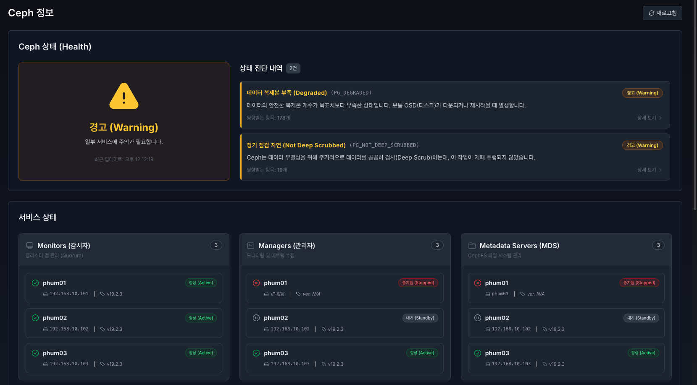
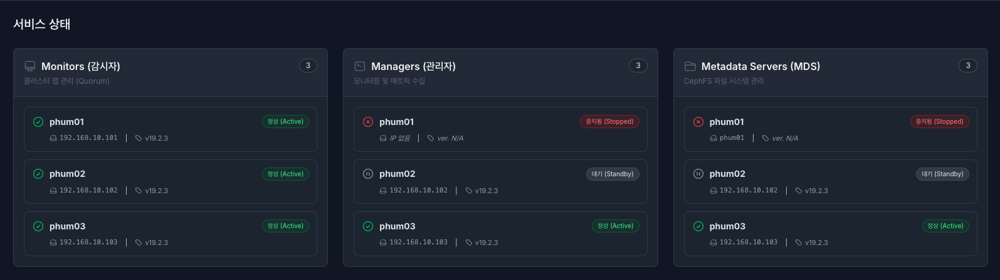

6. Ceph#

ceph 메인

1.1. Ceph Health 모니터링#
클러스터의 전반적인 건강 상태를 실시간으로 확인하고, 문제가 발생했을 때 직관적으로 원인을 파악할 수 있습니다.
전체 상태 요약 카드 (좌측) : 현재 Ceph 클러스터의 종합적인 상태를 색상과 아이콘으로 시각화하여 알기쉽게 표시합니다.
정상 (Healthy) : HEALTH_OK 상태로 모든 서비스와 데이터 복제 프로세스가 정상 작동 중입니다. (초록색)
경고 (Warning) : HEALTH_WARN 상태로 서비스는 작동 중이나 일부 OSD 공간 부족, 복제본 수 미달 등 주의가 필요합니다. (노란색)
오류 (Error) : HEALTH_ERR 상태로 데이터 손실 위험이 있거나 주요 서비스가 중단되어 즉각적인 조치가 필요합니다. (빨간색)
업데이트 주기: 데이터는 10초 간격으로 자동 갱신되며, 상단 ‘새로고침’ 버튼으로 수동 갱신이 가능합니다.
상태 진단 내역 (우측) : 현재 발생한 구체적인 이슈 목록을 표시합니다. 영문 에러 코드를 알기 쉬운 한글 명칭으로 변환하여 제공합니다.
PG (Placement Group) 관련 상태
데이터 복제본 부족 (Degraded) : PG_DEGRADED 상태로 데이터의 안전한 복제본 개수가 목표치(Replica count)보다 부족한 상태입니다. (OSD 다운/재시작 시 주로 발생)
복제본 개수 미달 (Undersized) : PG_UNDERSIZED 상태로 데이터를 저장할 충분한 OSD를 찾지 못해 복제본을 만들지 못하고 있습니다.
정기 점검 지연 (Not Deep Scrubbed) : PG_NOT_DEEP_SCRUBBED 상태로 Ceph는 데이터 무결성을 위해 주기적으로 데이터를 꼼꼼히 검사(Deep Scrub)하는데, 이 작업이 제때 수행되지 않았습니다.
점검 미수행 (Not Scrubbed) : PG_NOT_SCRUBBED 상태로 데이터 무결성 점검(Scrub)이 오랫동안 수행되지 않았습니다. 시스템 부하가 너무 높아 점검이 밀리고 있을 수 있습니다. 수동으로 실행하거나 부하를 줄이세요.
데이터 손상 감지 (Damaged) : PG_DAMAGE 상태로 심각한 데이터 손상이 감지되었습니다. 데이터 복구가 불가능할 수 있습니다. 즉시 ‘ceph pg repair’ 명령어로 복구를 시도하고, 실패 시 백업에서 데이터를 복구해야 합니다.
데이터 불일치 (Inconsistent) : PG_INCONSISTENT 상태로 복제본 간의 데이터 내용이 서로 다릅니다. Scrub 과정에서 발견되었습니다.
데이터 입출력 중단 (Availability) : PG_AVAILABILITY 상태로 일부 데이터에 접근할 수 없어 읽기/쓰기가 불가능한 심각한 상태입니다. 죽어있는 OSD를 즉시 살려야 합니다. 피어링(Peering)이 막혀있다면 네트워크 상태를 점검하세요.
복구 공간 부족 (Recovery Full) : PG_RECOVERY_FULL 상태로 데이터 복구를 진행해야 하는데, OSD에 남은 공간이 없어 복구를 할 수 없습니다. 새로운 OSD를 추가하여 용량을 확보해야 복구가 재개됩니다.
OSD (Object Storage Daemon) 관련 상태
OSD 다운됨 (OSD Down) : OSD_DOWN 상태로 하나 이상의 스토리지 데몬(OSD)이 작동을 멈췄거나 네트워크 연결이 끊겼습니다.
저장 공간 부족 임박 (Near Full) : OSD_NEARFULL 상태로 클러스터 저장 공간이 꽉 차가고 있습니다. (기본 85% 이상)
저장 공간 가득 참 (Full) : OSD_FULL 상태로 저장 공간이 한계에 도달하여 데이터 쓰기가 중단되었습니다. (매우 위험)
백필 공간 부족 (Backfill Full) : OSD_BACKFILLFULL 상태로 데이터 재배치(Backfill)를 하려는데 공간이 부족하여 작업이 중단되었습니다.
OSD 점검 오류 (Scrub Errors) : 디스크 점검(Scrub) 도중 물리적 배드섹터나 읽기 오류가 발견되었습니다. 해당 OSD의 스마트(SMART) 정보를 확인하고 디스크 교체를 검토하세요.
잦은 복구 발생 (Too Many Repairs) : OSD_TOO_MANY_REPAIRS 상태로 특정 OSD에서 너무 많은 읽기 오류/수정이 발생하고 있습니다. 고장 전조 증상입니다.
디스크 주의 (Device Health) : DEVICE_HEALTH_WARNING 상태로 디스크의 SMART 상태에서 문제가 감지되어 수명 예측이 경고 단계입니다.
성능 및 네트워크 지연 (Slow Ops / Ping) 관련 상태
작업 처리 지연 (Slow Ops) : SLOW_OPS 상태로 읽기/쓰기 요청 처리가 비정상적으로 오래 걸리고 있습니다. 성능 저하의 주원인입니다. 특정 OSD의 디스크 부하가 심한지(병목), 네트워크 대역폭이 포화 상태인지 확인하세요.
백엔드 네트워크 지연 (Slow Ping Back) : OSD_SLOW_PING_TIME_BACK 상태로 OSD 간 데이터 복제를 위한 내부(Cluster) 네트워크 응답 속도가 느립니다. 내부망 스위치, 케이블 상태를 점검하거나 특정 노드의 네트워크 부하를 확인하세요.
프론트엔드 네트워크 지연 (Slow Ping Front) : OSD_SLOW_PING_TIME_FRONT 상태로 클라이언트와 통신하는 외부(Public) 네트워크 응답 속도가 느립니다. 서비스망 네트워크 대역폭이 충분한지, 스위치 설정에 문제가 없는지 확인하세요.
Monitor 및 Manager 관련 상태
모니터 다운됨 (Monitor Down) : MON_DOWN 상태로 클러스터 맵을 관리하는 모니터 노드 중 일부가 응답하지 않습니다. (Quorum 유지 여부 확인 필요)
시간 동기화 오류 (Clock Skew) : MON_CLOCK_SKEW 상태로 모니터 노드 간의 시스템 시간이 서로 다릅니다. Ceph는 시간 동기화에 매우 민감합니다.
메신저 v2 미활성 (Msgr2 Not Enabled) : MON_MSGR2_NOT_ENABLED 상태로 최신 통신 프로토콜(v2)이 활성화되지 않았습니다.
매니저 다운됨 (Manager Down) : MGR_DOWN 상태로 매니저(Mgr) 데몬이 모두 죽었습니다. 대시보드 통계가 갱신되지 않습니다.
매니저 모듈 오류 (Mgr Module Error) : MGR_MODULE_ERROR 상태로 Ceph Manager 내부 플러그인(대시보드, 프로메테우스 등)에서 오류가 발생했습니다.
인증 및 설정 (업그레이드 시 자주 발생)
보안 취약 연결 감지 (Insecure Global ID) : AUTH_INSECURE_GLOBAL_ID_RECLAIM 상태로 오래된 클라이언트가 보안이 취약한 방식으로 재연결을 시도하고 있습니다.
구버전 데몬 감지 (Old Version) : DAEMON_OLD_VERSION 상태로 일부 데몬이 구버전 Ceph를 실행 중입니다. 업그레이드가 완료되지 않았을 수 있습니다.
DB 파티션 용량 초과 (BlueFS Spillover) : BLUEFS_SPILLOVER 상태로 빠른 속도를 위한 DB 파티션이 꽉 차서, 느린 일반 데이터 영역으로 메타데이터가 넘치고 있습니다.
정상 및 기타
정상 : HEALTH_OK 상태로 모든 서비스가 정상적으로 작동 중입니다.
경고 : HEALTH_WARM 상태로 클러스터 작동에는 문제가 없으나, 주의가 필요한 상태입니다.
오류 : HEALTH_ERR 상태로 즉각적인 조치가 필요한 심각한 상태입니다.
이 외 Ceph 클러스터에서 보고된 상태 코드는 상세 로그를 확인해주세요.

1.2. Ceph 상태 진단 내역 상세 모달 창#
목록에서 특정 진단 내역을 클릭하면 출력되는 상세 정보 창입니다.
상태 정보: 에러 코드에 대한 한글 명칭과 기술적인 설명(Description)을 상단에 표시합니다.
도움말 및 해결 가이드: 단순 에러 메시지뿐만 아니라, 관리자가 취해야 할 구체적인 조치 방법(Solution)*을 가이드 박스 형태로 제공합니다.
상세 로그: 발생한 이슈에 대한 로우(Raw) 로그 데이터를 시간 순으로 제공하며, 로그 복사 버튼을 통해 클립보드에 저장할 수 있습니다.
원본 메시지: 숙련된 관리자를 위해 Ceph가 반환한 영문 원본 메시지도 함께 표기합니다.

2.1. Ceph 서비스 상태 모니터링#
Ceph 클러스터를 구성하는 핵심 데몬들의 인벤토리와 상태를 카드 형태로 모니터링합니다.
공통적으로 서비스 상태는 정상 (Active) - (초록), 대기 (Standby) - (회색), 중지됨 (Stopped) **- (빨강)**상태가 있으며, 파트는 다음과 같이 3가지로 나뉩니다.
Monirots (감시자) : 클러스터 맵(Cluster Map)과 쿼럼(Quorum) 상태를 관리합니다. Quorum에 참여하여 리더 또는 팔로워 역할을 수행 중입니다.
Managers (관리자) : 대시보드, 모니터링, 메트릭 수집을 담당합니다.
Active: 현재 주(Primary) 관리자 역할을 수행 중입니다.
Standby: 주 관리자 장애 시 역할을 넘겨받기 위해 대기 중입니다.
Metadata Servers (MDS) : CephFS 파일 시스템의 메타데이터를 관리합니다.
Active: 파일 시스템 요청을 처리 중입니다.
Standby: 부하 분산 또는 장애 조치를 위해 대기 중입니다.

3.1. Ceph OSDs 상태 모니터링#
실제 데이터가 저장되는 물리 디스크(OSD)의 상태를 노드(서버) 단위로 그룹화하여 관리합니다.
OSD 요약 카드 (상단)
전체 OSD 개수: 클러스터에 등록된 총 OSD 수.
정상 작동 (Up): 프로세스가 정상 실행 중인 OSD 수.
장애 / 중단 (Down): 프로세스가 중단되어 점검이 필요한 OSD 수.
용량 부족 임박 (>85%): 사용량이 위험 수준에 도달한 OSD 수.
OSD 상세 목록 (노드별 그룹핑)
물리적 서버(Node) 별로 OSD를 묶어서 표시하여, 특정 서버의 장애 여부를 쉽게 파악할 수 있습니다.
ID: OSD의 고유 식별 번호 (예: 0, 1, 2…).
작동 상태 (Status): OSD 데몬 프로세스의 실행 여부.
정상 (Up): 프로세스 실행 중 (초록색).
중단 (Down): 프로세스 중지됨 (빨간색).
데이터 배치 (In/Out): CRUSH 알고리즘에 의한 데이터 할당 여부.
배치 (In): 클러스터 데이터 저장소로 참여 중 (파란색).
제외 (Out): 유지보수 등의 이유로 데이터 할당에서 제외됨 (회색).
유형 (Type): 디스크의 물리적 타입 (HDD, SSD, NVMe). 아이콘으로 구분됩니다.
장치 경로 (Device): 리눅스 시스템 상의 블록 디바이스 경로 (예:
/dev/sda,/dev/dm-0).사용량 (Usage): 디스크 전체 용량 대비 사용량을 프로그레스 바로 시각화합니다.
파란색: 안정 (< 70%)
노란색: 주의 (70% ~ 85%)
빨간색: 위험 (> 85%)
PG 개수: 해당 OSD에 할당된 Placement Group의 개수로, 데이터가 고르게 분산되어 있는지(로드 밸런싱) 확인할 수 있습니다.